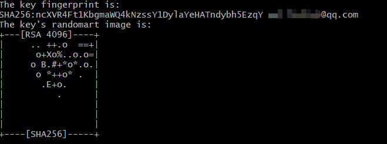
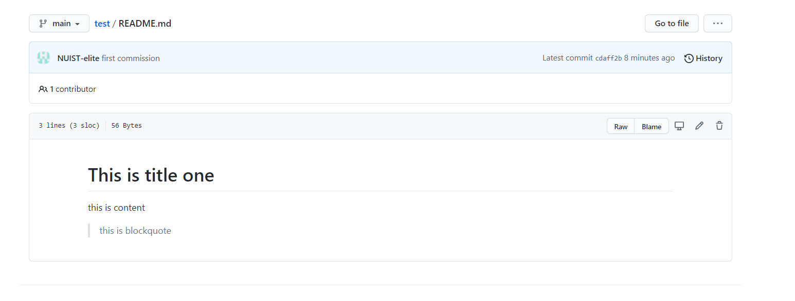

前言
这是一篇零基础的GitHub教学，帮助你从创建账号开始，到能熟练操作GitHub。这篇教程包括博主在踩过很多坑，看了很多教程后总结出来的一些个人经验，之后遇到新的问题也会更新到博客上。
GitHub是什么
Git
Git是一个开源的分布式版本控制系统，可以有效、高速地处理从很小到非常大的项目版本管理。如今无论个人还是企业，开发的项目越来越大，而版本会不断地更新，当你想要找到之前某个版本的代码，查看某个版本的修改内容或是回退一些修改时，就会非常需要一个版本管理工具，这时git就能派上用场了。
同样的，多人协同开发几乎是所有企业都会采用的方法，在使用了git版本控制后，每个人有自己负责的板块，提交到一个公有的仓库，并且能查看到别人对代码的修改，以及每次修改带有的备注。
GitHub
GitHub是一个面向开源及私有软件项目的托管平台，因为只支持Git作为唯一的版本库格式进行托管，故名Github。
GitHub是世界上最大的代码托管平台,超5千万开发者正在使用。而本篇博客会帮助大家拥有自己的GitHub账号并熟练使用。
创建GitHub账号
进入GitHub官网
点击此处，或者直接在浏览器中访问以下地址（对于国内用户，建议挂一个VPN，网速会快很多）
https://github.com/
点进去后会看到如下页面：
注册账号
在主页左中处输入自己的邮箱，并点击右边Sign up for GitHub
进入到如下注册页面，输入自己的用户名，一定要用英文的，建议用小写字母，多个单词中间用-连接。
Email-preference勾了会定期给你发一些推荐邮件，勾不勾都可以。
进行完人机认证后，点击create account，然后是Join a free plan创建账号。
完成注册
看到如下页面后，就意味着注册已经成功了！
该页面中，根据自己的情况选择，工作，爱好，使用GitHub目的等，选择完成后，点击最下方Complete setup就ok啦。
之后会发送给你一封验证邮件，进入你的注册邮箱，打开邮件，点击Verify email address即可。
跳转到如下页面，点击skip for now，进入GitHub主页。

GitHub主页
到这里，你就已经拥有自己的GitHub帐号了！
点击右上角自己的头像，并点击自己的名字，进入个人中心

建立自己的远程代码仓库并绑定本地
GitHub创建新仓库
在创建好自己的账号后，我们要做的就是把自己的代码上传到GitHub上！这时候就要用到GitHub的仓库(repository)，所以接下来我们首先在GitHub上创建仓库！
进入自己的首页，在下图两处中任意一处点击，即可开始创建一个新的代码仓库。
进入创建详情页，具体的操作见下图：
创建完成后，进入仓库首页，可以随便看看各个模块。
在这里介绍一下创建仓库时添加的两个文件：
-
README.md：该文件的内容主要是你对自己该项目的介绍与说明，如果有人打开你的仓库，看到代码都会一筹莫展，那这时他们就可以打开README查看项目说明
.md是markdown文件的后缀名，Markdown 是一种轻量级标记语言，它允许人们使用易读易写的纯文本格式编写文档。语法非常简单，可在网上自行查询学习。
-
.gitignore：我们做的每个Git项目中都需要一个**“.gitignore”文件，这个文件的作用就是告诉Git哪些文件不需要**添加到版本管理中。
在之后代码提交时，会进行具体介绍，现在了解作用即可。
本地配置git所需环境
下载git
-
Windows
在官网下载最新版的git：下载地址

点击上图的Windows即可开始下载，下载完后打开这个exe文件开始安装。
一路点击next，直到下图的位置，勾选一下additional icons里的on the desktop。
然后继续一路next，直到下图的位置，勾选如图中的位置
接下后都按默认到最后finish就完成了，open Git Bash可选可不选
到这里git 环境就安装完成了。
-
mac
在命令终端输入git --version，查看是否已安装git，如果没有，mac会提示安装，一路按照只是走就行了、
在安装后，桌面会出现一个Git Bash软件，你可以看作git特有的cmd。之后所有跟git有关的命令行操作强烈建议都在这里面操作
配置SSH key
SSH（Secure shell，安全协议外壳）。它可以保证我们的本地电脑和我们的GitHub之间的安全连接。你可以看作SSH是一个电脑与GitHub账号之间沟通的一个暗号。接下来就要在本地配置一下SSH。
-
因为接下来都是命令行操作，所以打开Git Bash操作。
-
首先输入下面命令，查看是否已经存在ssh
1
cat ~/.ssh/id_rsa.pub
如果出现如下字符串，就是说明已经存在ssh key，可以跳过创建的步骤
-
如果没有已创建的ssh key，则需要自己创建，输入如下命令：
1
ssh-keygen -t rsa -b 4096 -C "your_email@example.com"
其中的
your_email@example.com换成自己创建GitHub的邮箱之后一直点回车就行，直到出现下图的字符串，则已经创建成功：

-
再输入下列命令，就可以得到ssh字符串：
1
cat ~/.ssh/id_rsa.pub
复制这个由ssh-rsa开头，你的邮箱结尾的字符串
-
进入GitHub主页，点击右上角头像，再点击
setting，进入设置页面 -
点击右边的
New SSH key，创建一个新的SSH key，其中title可以自己随意命名，然后key粘帖上刚刚复制的ssh字符串，最后点击
add SSH key完成添加。出现如下图像的SSH，证明已经创建成功！
git clone远程仓库
之前已经创建好了ssh key并绑定了自己的电脑和GitHub账号，现在就可以利用SSH地址，将远程的仓库clone到本地
-
在第一次使用git时，需要配置git全局邮箱和用户名，打开git bash，一次输入如下两条命令
1
2git config --global user.name "your name" # 配置全局用户名
git config --global user.email "your@example.com" # 配置全局邮箱其中，
your name换成你的GitHub用户名，your@example.com换成你注册GitHub的邮箱地址 -
在你想要存放远程仓库的文件夹中右击，选择
Git bash here，打开Git bash -
输入如下命令：
1
git clone 仓库地址
仓库地址，可以在仓库页面找到，点击中右部分的
code，然后选择ssh，复制ssh地址出现如下显示就代表clone成功了！
-
输入如下命令，进入仓库
1
cd 你的仓库名 # 比如我的仓库名是test，就是cd test
可以看到，目前是在仓库的主分支main。
这样远程仓库就已经clone到我们自己的电脑上了，可以在文件夹中看到与远程仓库中相同的文件。
本地仓库提交到远程
完成clone后，就拥有了本地仓库，并且已经绑定了远程仓库，这时我们就可以在本地修改文件，并且提交了。
-
进入你刚刚clone的文件夹，打开README.md，可以直接用记事本打开。
推荐一个很好用的markdown编辑器：Typora
删除原本内容，在里面输入如下内容：
1
2
3# This is title one
this is content
> this is blockquote这里面是一些markdown基本语法，之前介绍过
-
保存并关闭文件，在仓库文件夹中打开Git bash，开始提交，提交分为三步走：
-
git add；git add是提交的第一步，一般是这么写的：
1
git add -A
这条命令的意思是添加所有文件，也可以输入
git add .，是一样的 -
git commit；git commit是提交第二步，写法如下:
1
git commit -m "你本次提交的备注"
备注就是对你这个版本修改了哪些东西的概括，建议输入
-
git push；提交的最后一步是git push，在第一次提交时，需要下面这样写：
1
git push origin main
之后每次提交，这一步只要输入
git push就行了。第一次使用git提交时，会出现如下提示，输入
yes即可：
-
-
提交完成进入你的GitHub仓库，打开README.md文件，就会发想刚刚的修改已经成功提交上去了！

在本地建立项目并绑定远程
之前我们学会了通过git clone从远程仓库中将已有的内容clone到自己的本地文件夹中。那如果我们本地已经有了一个项目，那如何手动将这个项目绑定到远程呢？本节我们就会学习几种不同情况下的本地绑定。
本地项目绑定远程空仓库并实现上传
这是最简单的情况，不会出现任何代码冲突的情况。我们一步一步来看
-
首先你可以随便选择本地的一个项目，我会使用一个普通的Spring boot项目进行演示。首先我们在GitHub中创建一个空的仓库，创建仓库的步骤与之前相同，但要注意，不要勾选README和.gitignore。
-
创建完成后，根据之前一样的步骤，复制下你这个项目的SSH地址。
-
现在可以打开你的项目文件夹，首先看一下有哪些文件，以我的项目为例：
可以看到，在图中指出的两个文件是有用的代码，是我们需要上传到GitHub的，用户只需要这两个文件夹即可运行项目。而其他则是一些软件或是工具产生的无关文件，并不需要上传。这个时候，.gitignore文件就派上用场了。
-
首先我们对照着我的项目文件夹，看一看下面的这个.gitignore文件：
1
2
3/*
!src
!pom.xml/符号的意思是，后面跟的文件不上传。上面第一行的意思是，所有文件夹内文件全部忽略不上传与
/对应的是*!*符号，在忽略了所有文件后，又将src和pom.xml排除在忽略范围之外所以上面这个**.gitignore**文件意思就是，在上传时，只上传文件夹中
src和pom.xml -
大家对应自己的项目，看看哪些文件是需要上传的，在.gitignore文件中写好规则，如果没有这个文件，自己创建一个即可。
-
做好准备工作后，就可以开始绑定了！首先在项目文件夹中打开git bash，输入如下命令：
1
git init
该命令意思是，将该项目文件夹初始化为一个Github仓库
可以看到，初始化成功后，会显示当前处于默认的main分支
-
现在我们的项目文件夹就已经是一个git仓库了，但我们还需要将它与远程仓库绑定，首先输入如下命令，查看是否已有绑定：
1
git remote -v
如果是刚初始化的仓库，是不会显示有内容的
-
接下来进行绑定，将你之前复制的空仓库的SSH地址放在下面命令最后：
1
git remote add origin 你的SSH地址
比如我的SSH地址是
git@github.com:NUIST-elite/demo.git，那我就输入：git remote add origin git@github.com:NUIST-elite/demo.git执行后，再次输入
git remote -v，会发现已经成功绑定了！ -
由于远程的是空仓库，所以不用担心代码冲突问题，直接按照之前的提交三步走进行提交即可！
-
提交成功后，打开GitHub，可以看到，代码按照我们写的规则传上来了！
远程仓库与本地存在普通文件冲突时的上传
If you like this blog or find it useful for you, you are welcome to comment on it. You are also welcome to share this blog, so that more people can participate in it. If the images used in the blog infringe your copyright, please contact the author to delete them. Thank you !